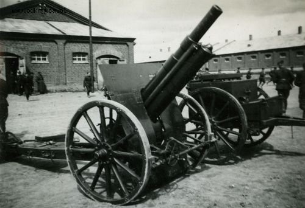
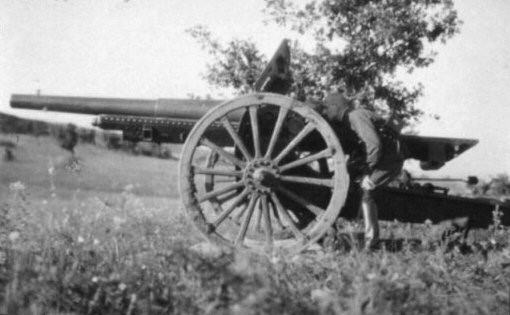
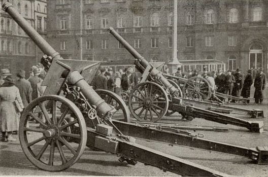
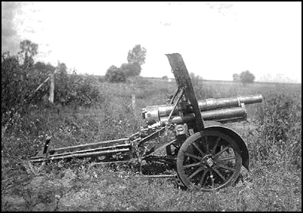
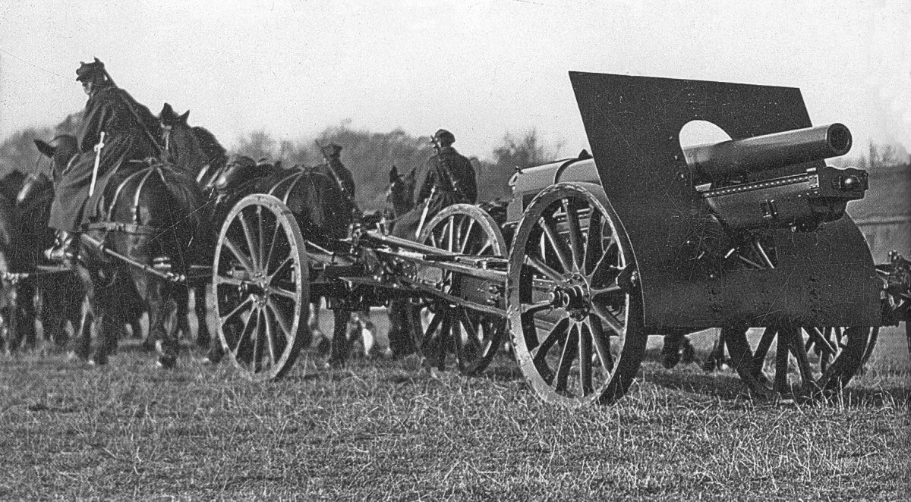
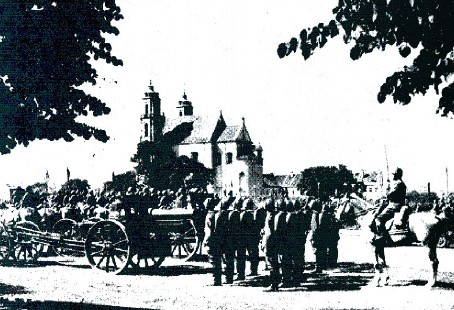

Variants: Around 12 converted to motorised transport with the addition of rubber tyres.
Notes: .
Haubica Wz.14/19A
Year: 1928.
Weapon Type: Light Field Howitzer.
Total: 336.
Crew: 7.
Calibre: 100mm.
Elevation: -8° to +48°.
Traverse: 6°.
Breech: Interrupted Screw.
Recoil System: Hydrospring.
Carriage: Fixed Trail.
Gun Shield: 7mm.
Weight in Traction: 2.017 kg.
Weight in Action: 1.100 kg.
Barrel Length: 2.285mm (L/30).
Overall Length: 4.32m.
Height: 1.63m.
Width: 1.84m.
Shell Weight: 6.4 kg.
Muzzle Velocity: 588 m/s.
Rate of Fire: 10 r.p.m.
Maximum Range: 8.500m.
Traction: Horse Drawn (Six Horses).
Notes: Mainly used as Fortress Artillery, to protect forward areas and slow down enemy advances..
Haubica Wz.14/19P

Wz.14/19P.
Year: 1928.
Weapon Type: Light Field Howitzer.
Total: 900.
Crew: 7.
Calibre: 100mm.
Elevation: -8° to +48°.
Traverse: 6°.
Breech: Horizontal Sliding Wedge.
Recoil System: Hydrospring.
Carriage: Box Trail.
Gun Shield: 4.2mm.
Weight in Traction: 2.110 kg.
Weight in Action: 1.450 kg.
Barrel Length: 2.400mm (L/24).
Overall Length: 5.51m.
Height: 1.72m.
Width: 1.85m.
Shell Weight: 15.8 kg (HE).
Muzzle Velocity: 366 m/s.
Rate of Fire: 6 r.p.m.
Maximum Range: 9.600m.
Traction: Horse Drawn (Six Horses) or Motorised (C4P Tractor).
Notes: .
Armata Wzór.13

Wz.13.
Year: 1918.
Weapon Type: Medium Field Gun.
Total: 118.
Crew: 8.
Calibre: 105mm.
Elevation: -5° to +37°.
Traverse: 6°.
Breech: Interrupted Screw.
Recoil System: Hydropneumatic.
Carriage: Box Trail.
Gun Shield: 4mm.
Weight in Traction: 2.650 kg.
Weight in Action: 2.300 kg.
Barrel Length: 2.987mm (L/28).
Overall Length: 6.30m.
Height: 1.95m.
Width: 2.23m.
Shell Weight: 15.3 kg (HE).
Muzzle Velocity: 550 m/s.
Rate of Fire: 8 r.p.m.
Maximum Range: 12.000m.
Traction: Horse Drawn (Eight Horses).
Notes: .
Armata Wz.29

Wz.29.
Year: 1934.
Weapon Type: Medium Field Gun.
Total: 124.
Crew: 9.
Calibre: 105mm.
Elevation: -0° to +43°.
Traverse: 25°.
Breech: Interrupted Screw.
Recoil System: Hydropneumatic.
Carriage: Split Trail.
Gun Shield: 4mm.
Weight in Traction: 3.410 kg.
Weight in Action: 2.880 kg.
Barrel Length: 6.40mm (L/31).
Overall Length: 6.0m.
Height: 1.95m.
Width: 2.23m.
Shell Weight: 15.55 kg (HE).
Muzzle Velocity: 600 m/s.
Rate of Fire: 6 r.p.m.
Maximum Range: 15.500m.
Traction: Horse Drawn (Eight Horses) or Motorised (C4P Tractor).
Notes: .
POLISH INFANTRY GUNS
TODO: Infantry guns blurb
Armata Górska Wz.06

Wz.06.
Year: 1919.
Weapon Type: Infantry Gun.
Total: 24.
Crew: 5.
Calibre: 65mm (65x167R).
Elevation: -9° to +35°.
Traverse: 6°.
Breech: Screw.
Recoil System: Hydrospring.
Carriage: Box Trail.
Weight in Traction: 450 kg.
Weight in Action: 400 kg.
Barrel Length: 1.300mm (L/20).
Overall Length: 2.40m.
Shell Weight: 4.5 kg.
Muzzle Velocity: 330 m/s.
Rate of Fire: 18 r.p.m.
Maximum Range: 6.500m.
Traction: Pack (Four Loads).
Notes: .
POLISH MEDIUM & HEAVY ARTILLERY
TODO: Heavy blurb
Armata Wz.78/09/31 & 78/10/31

Wz.78/09/31.
Year: 1931.
Weapon Type: Medium Gun.
Total: 43.
Crew: 9.
Calibre: 120mm.
Elevation: -17° to +30°.
Traverse: 3°.
Breech: Interrupted Screw.
Recoil System: Hydropneumatic.
Carriage: Box Trail.
Gun Shield: mm.
Weight in Traction: 3.500 kg.
Weight in Action: 3.300 kg.
Barrel Length: 3.250mm (L/27).
Overall Length: 6.97m.
Height: 1.47m.
Width: 1.53m.
Shell Weight: 20.3 kg (HE).
Muzzle Velocity: 613 m/s.
Rate of Fire: 4 r.p.m.
Maximum Range: 12.400m.
Traction: Horse Drawn (Eight Horses) or Motorised (C4P Tractor).
Notes: This was a combination of the French 120mm mle 1878 gun barrel with carriage of the Russian 152mm M1909 and M1910 Howitzer. Twelve were converted to motorised traction.
Haubica Wz.17

Wz.17.
Year: 1918.
Weapon Type: Medium Howitzer.
Total: 341.
Crew: 9.
Calibre: 155mm.
Elevation: -5° to +42°.
Traverse: 2.7°.
Breech: Interrupted Screw.
Recoil System: Hydropneumatic.
Carriage: Box Trail.
Gun Shield: 4mm.
Weight in Traction: 3.940 kg.
Weight in Action: 3.300 kg.
Barrel Length: 2.176mm (L/15).
Overall Length: 5.91m.
Height: 1.43m.
Width: 1.90m.
Shell Weight: 43 kg (HE).
Muzzle Velocity: 450 m/s.
Rate of Fire: 3 r.p.m.
Maximum Range: 11.200m.
Traction: Horse Drawn (Eight Horses) or Motorised (C4P Tractor).